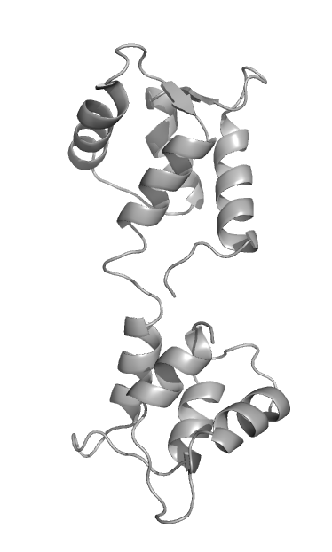

|
Furan5: A Structural Biology Blog with Minimalist Design |
|
Furan5: A Structural Biology Blog with Minimalist Design |
| |
|
|
|
|||||
Lysozyme |
|
Calmodulin (CaM)
|
(Re)Docking |
Test |
||||
| Calmodulin | ||||||||
| PyMol POVRay Tutorial | ||||||||
| RCSB Statistics 1 | ||||||||
Minimal design?
Modern websites tend to emphasize sleek design at the expense of
simplicity (and sometimes function). Infinite scrolling, animated
dropdown menus, obtuse navigation, and long loading times for a website
designed to convey only a few lines of text are clear examples of
modern design losing sight of what is important. In the interest of
returning to basics, I've used a minimalist approach to delivering
content.